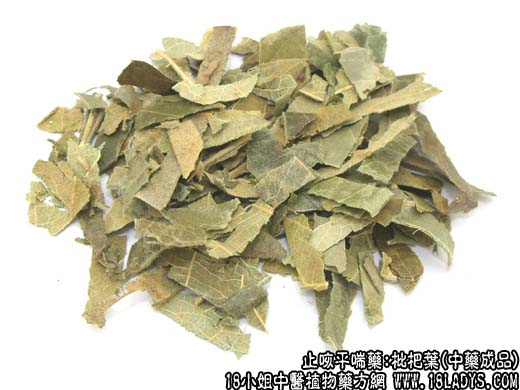
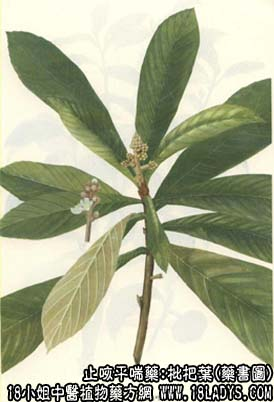

原文连接:https://www.daquan.com/post/2149.html



别名：杷叶。
来源：为蔷薇科植物小乔木枇杷的干燥叶。均为栽培。
产地：主产于广东、广西、浙江、江苏等省，福建、江西、湖南均有生产。
性状鉴别：叶片场椭圆形，长15~30厘米，宽4~9厘米。叶端渐尖，基部楔形，上部锯齿缘，基本全缘。羽状网脉，中 脉载叶背面极为明显。叶面光滑，有光泽，棕绿色或棕黄色。叶背淡灰绿色或棕绿色，密被毛茸，叶柄极短。叶革质，较脆。气微，味微苦。
以叶片大而肥厚，棕绿色，叶背毛密者为佳。
主要成分：含苦杏仁甙、乌索酸、齐墩果酸、苹果酸、柠檬酸、鞣质、维生素B1。
功效与作用：化痰止咳、和胃止呕。其作用为镇咳（与所含苦杏仁甙有关）、祛痰、健胃。
炮制：刷去毛茸，切丝生用火蜜炙。
性味：苦、平。
归经：入肺、胃经。
功能：清肺和胃，降气化痰。
主治：痰热咳嗽，胃热呕吐等症。
临床应用：为清解肺热胃热的常用药。
1、治肺热咳嗽，表现干咳无痰，或痰少粘稠，不易咳出，或咳时有胸痛，口渴咽干，苔黄脉数（可见于急性支气管炎），取其有润肺止咳作用，常配菊花、杏仁、茅根、川贝等，方如枇叶汤，用枇杷露亦可。
2、治胃热噫呕（呃逆火噫气作呕）、胃脘胀闷，配布渣叶、香附、条芩、鸡内金等。方如杷叶止呕汤。
附：1、枇杷叶入药要先刷去其绒毛。据报道，其毛与叶的化学成分基本相同，绒毛并不含有致咳的或其他副作用的成分，去毛主要是防其吸入刺激气管粘膜而产生咳嗽反应；
2、蜜炙枇杷叶治咳较好，姜汁炙枇杷叶（或生枇杷叶）治呕较好。
用量：9~15g。
处方举例：1、杷叶汤：枇杷叶12g，杭菊9g，北杏仁9g，川贝9g，生地12g，茅根24g，甘草4.5g，水煎服。
2、杷叶止呕汤：炙枇杷叶（姜汁）12g，布渣叶15g，香附9g，条芩6g，鸡内金6g，淮山药15g，葛根9g，水煎服。
注：习惯认为广杷叶大而肥厚，品质较好。